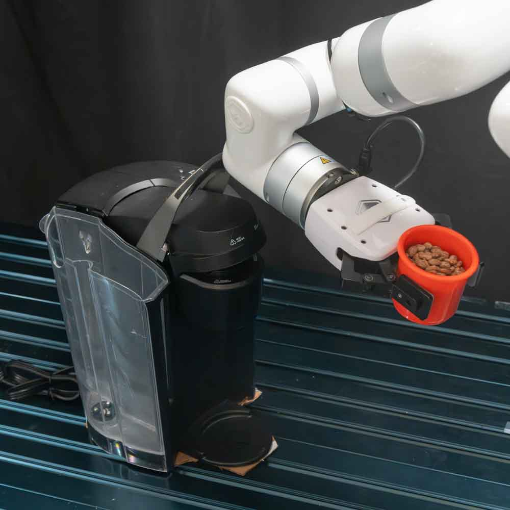
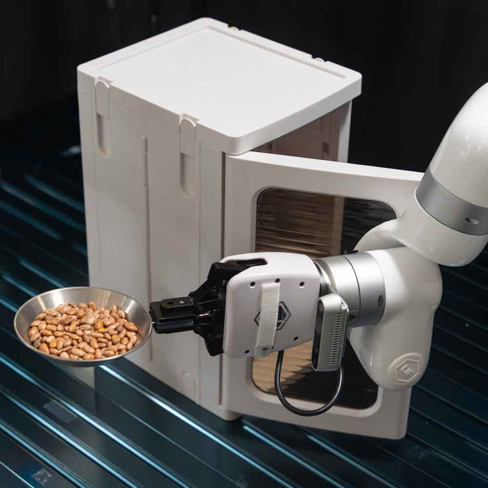
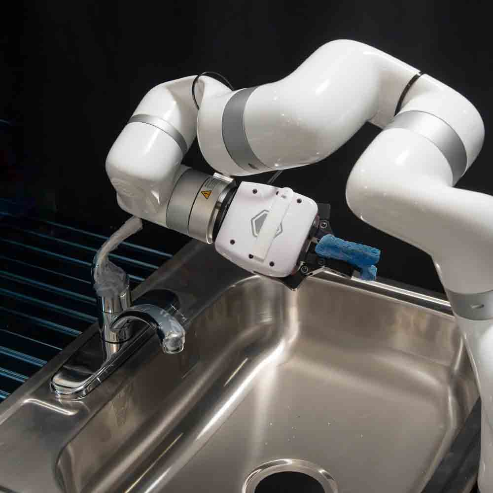
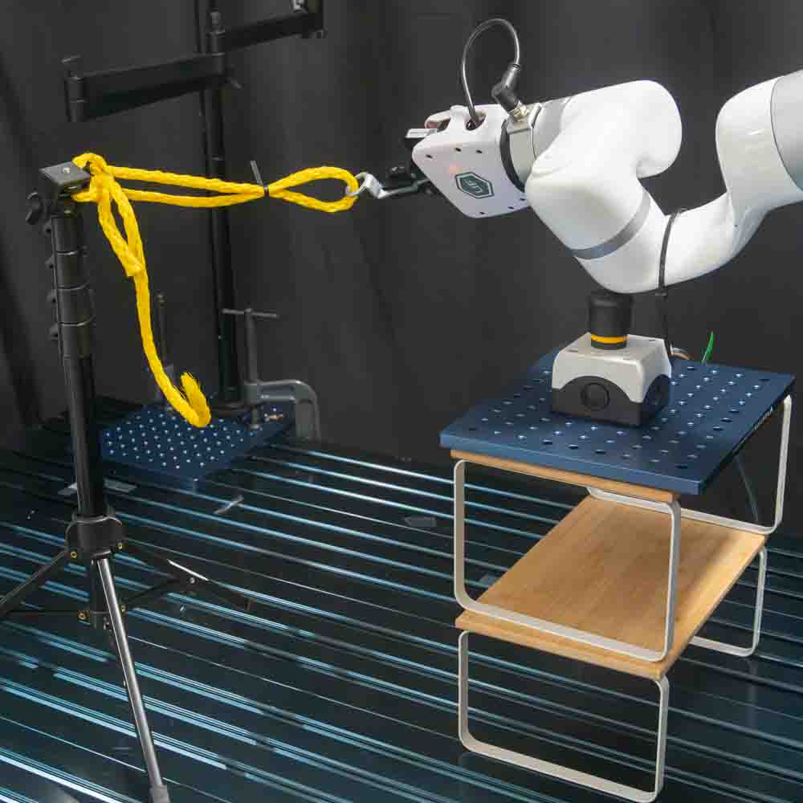
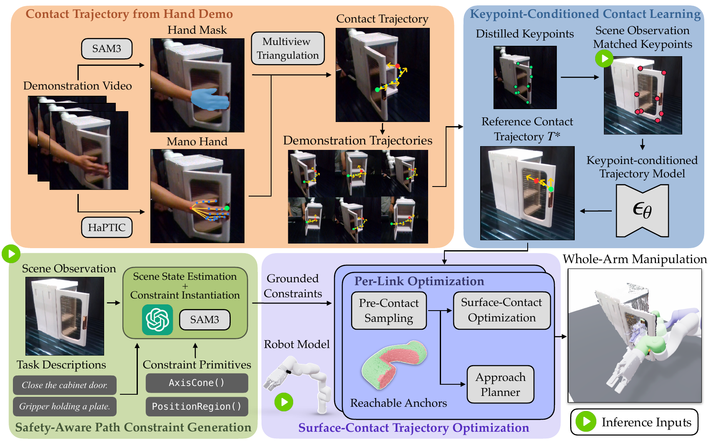

Robot manipulation has traditionally relied on end-effector-centric interactions. In contrast, humans routinely exploit whole-arm contacts to improve efficiency, robustness, and adaptability, especially when the hands are occupied or when precise grasping is unnecessary. Enabling similar capabilities in robots remains challenging: the robot must select where on its arm to make contact, generate effective non-prehensile interactions, and satisfy task-specific pose or safety constraints on the end-effector.
We propose Whole-Arm Contact Learning (WACL), a hierarchical framework that describes each whole-arm contact task with three robot-agnostic representations and hands them to a quasi-static surface-contact optimizer: semantic keypoints that summarize the scene, a reference contact trajectory that specifies where and how the arm presses on the object, and safety-aware path constraints that a vision-language model generates from the task description to protect the end-effector's task. The robot's kinematic chain enters only in this optimizer, which grounds these representations onto the arm by jointly searching over which link makes contact, where on that link, and the joint configuration that realizes it.
This decomposition lets WACL learn the contact trajectory from 10 bare-hand human demonstrations per task collected without teleoperation, while new end-effector constraints change only the optimizer's input rather than any trained component. Real-world experiments on a 7-DoF arm across four whole-arm tasks show that WACL sustains contact under end-effector constraints where a strong link-pose baseline fails (78% vs. 33% success) and generalizes to new constraints without retraining.
In daily life, manipulation is rarely confined to the fingertips. When our hands are already occupied — carrying a load or holding a cup of coffee — we recruit the rest of the arm: nudging a door open with an elbow, steadying a box against a forearm.
This is a two-task problem: the hand keeps the cup upright (the primary task) while the arm presses a button or pushes a drawer shut (the secondary task). Whatever the arm does must not disturb what the hand is already committed to.
Robot manipulation, however, remains overwhelmingly end-effector-centric. Pre-trained VLAs output gripper-pose actions and treat the arm as a transport mechanism, so arm-environment contact is usually avoided rather than exploited. This discards useful kinematic redundancy and limits the robot in constrained or cluttered settings, where whole-arm contact may be necessary because a gripper-only motion is infeasible. Learning whole-arm manipulation end-to-end is difficult for two compounding reasons.




The same contact task looks entirely different depending on which link executes it — different pixels, different joint angles. That makes transferring contact behavior across links very hard for a policy trained on raw observations.
People make whole-arm contact naturally, but teleoperating a 7-DoF arm into the same contacts is slow and unintuitive, and typically needs a leader-follower system or an exoskeleton. Bare-hand demonstrations are a more natural data source, but they carry no robot actions and leave a human-to-robot embodiment gap.
Teleoperating a 7-DoF arm into whole-arm contact is slow and unintuitive. WACL instead learns from bare-hand demonstrations recorded in front of calibrated RGB-D cameras — no robot, no teleoperation hardware. From these it distills semantic keypoints and a reference contact trajectory: where on the object the arm should press and which way the surface faces. Because neither representation names a particular link, the learned behavior is robot-agnostic.
A person shows the task bare-handed,
with no robot and no teleoperation.
The robot learns to open the coffee machine with its arm while the hand keeps the cup upright.
The contact trajectory is one of three robot-agnostic abstractions WACL passes to a surface-contact optimizer. The other two are semantic keypoints that summarize the scene and VLM-generated safety-aware path constraints that encode what the primary end-effector task demands — keep a cup upright, stay above the sink. The robot's kinematic chain enters only here: the optimizer jointly searches over which link makes contact, where on that link, and the joint configuration, so a new end-effector requirement changes only the optimizer's input, not any trained component.

From 10 bare-hand human demonstrations per task, WACL leverages KALM to distill semantic keypoints and learn a reference contact trajectory: where on the object to make contact and the surface normal to follow. It commits to no particular link, so the behavior stays robot-agnostic.
A vision-language model turns the task description and scene into safety-aware path constraints on the end-effector, such as keep a held cup upright or stay above the sink, built from a fixed vocabulary of two primitives (AxisCone, PositionRegion). They are regenerated at every inference, so a new end-effector constraint needs no retraining.
Only here does the robot's kinematics enter. A surface-contact optimizer searches jointly over which link makes contact, surface anchors on that link, and the joint configuration, assembling a collision-free trajectory that tracks the contact target while every constraint holds.
Same policy, same reference contact trajectories, same task descriptions. Swap only the robot model in the optimizer, and WACL runs on a Franka FR3 with a Robotiq gripper: no retraining and no FR3 demonstrations.
Aggregate success on the FR3, with only the robot model swapped (xArm: 75% / 78%). The gap is mostly on OpenCoffee, where the FR3's thicker links struggle to thread the slim handle; the other tasks transfer almost unchanged.
The baseline is KALM, a keypoint-conditioned diffusion policy whose keypoint pipeline WACL shares, retrained to regress the 6-DoF pose of one contact link. It runs through the same optimizer, with the anchor search disabled. Committing to a link pose leaves IK no freedom once a constraint on the hand binds. WACL only says where and how to touch the object and lets the optimizer choose the link and the anchor on it, so it can reroute the contact and keep the hand's task intact. (KALM learns from teleoperated demonstrations, since a bare hand cannot define a link pose; WACL learns from bare-hand ones.)
| Task | Unconstrained | Constrained | End-effector constraint | ||||
|---|---|---|---|---|---|---|---|
| KALM | WACL (ours) | WACL (FR3) | KALM | WACL (ours) | WACL (FR3) | ||
| OpenCoffee | 4/10 | 6/10 | 5/10 | 2/10 | 7/10 | 4/10 | Hold cup upright |
| CloseCabinet | 7/10 | 7/10 | 8/10 | 5/10 | 8/10 | 7/10 | Hold plate level |
| CloseFaucet | 6/10 | 8/10 | 8/10 | 3/10 | 7/10 | 8/10 | Keep gripper above sink |
| PressButton | 6/10 | 9/10 | 9/10 | 3/10 | 9/10 | 8/10 | Stay tethered by rope |
| Aggregate | 58% | 75% | 75% | 33% | 78% | 68% | |
| Real-world successes over 10 rollouts per cell, with 10 demonstrations per task. KALM and WACL (ours) run on the xArm 7; WACL (FR3) runs zero-shot on a Franka FR3, with only the optimizer's robot model swapped. Under end-effector constraints, WACL more than doubles KALM (78% vs. 33%, p = 1.6×10⁻⁴). | |||||||
On OpenCoffee, pinning the anchor to one spot on the link makes the motion IK-infeasible halfway through under the cup-upright constraint.
On PressButton, each link reaches placements the other cannot. Searching over both recovers them.
The coffee lid does not move on an arc: the capsule carriage slides while the lid rotates less than the handle. The policy learns this motion from demonstrations.
Add a cup-upright constraint on top of the above-sink one on CloseFaucet: same success, no retraining.
| Variant | What changes | Task | Full WACL | Variant |
|---|---|---|---|---|
| + second constraint | cup-upright AxisCone added | CloseFaucet | 7/10 | 7/10 |
| w/o sliding anchor | anchor fixed at first waypoint | OpenCoffee | 7/10 | 3/10 |
| w/o link search | link fixed to link 5 | PressButton | 9/10 | 6/10 |
| link fixed to link 6 | PressButton | 9/10 | 7/10 | |
| geometric primitive | hand-set arc as trajectory | OpenCoffee | 7/10 | 4/10 |
| hand-set line as trajectory | PressButton | 9/10 | 7/10 | |
| registered replay | ICP-registered demonstration | OpenCoffee | 7/10 | 6/10 |
Generalization, ablations, and controls. Each variant runs 10 rollouts on one constrained task, on the same placements as the full model. A second end-effector constraint leaves success unchanged, while removing an optimizer component or replacing the learned trajectory lowers it.
Aggregated over the four tasks, the constrained gap (31/40 vs. 13/40) is significant (Cochran–Mantel–Haenszel p = 1.6×10⁻⁴); the unconstrained gap is not (p = 0.16). The VLM constraint generator was audited offline on 100 unfiltered generations: 94 reproduced the deployed constraint, the remaining 6 were over-constrained and would surface as “no plan”, and none was looser than deployed.
WACL jointly optimizes the contact link, the contact surface point, and the joint configuration to find the best way to complete the task while satisfying all constraints. In the three runs below it presses the same button from three different object positions and joint configurations. It uses different parts of the arm for each run.
A VLM regenerates the end-effector constraints from the task description at every inference, so changing the end-effector task is a change of input, with no retraining. Here we make the faucet task harder by swapping the pad for a cup: now WACL must keep the cup upright and hold it above the sink at the same time. It succeeds 7/10 with one constraint and with two.
@inproceedings{huang2026wacl,
title = {Beyond the End-Effector: Learning Whole-Arm Contact Manipulation from Human Demonstrations},
author = {Bo-Ruei Huang and Daniel Seita and Erdem B{\i}y{\i}k},
booktitle = {Conference on Robot Learning (CoRL)},
year = {2026}
}